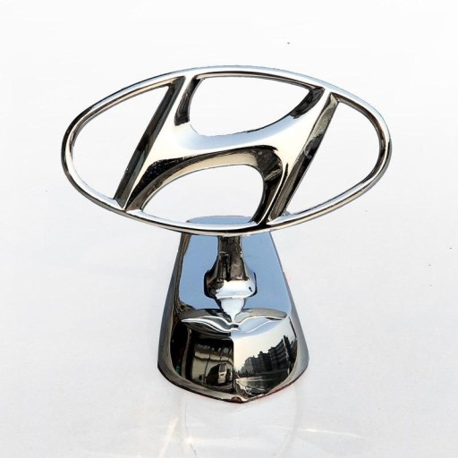

<
- 아반테
- 그렌져
- 산타페
Many car service centers across the country are having difficulty in procuring parts as the newly introduced system by Hyundai Mobis this month did not work, the Chosun Biz reported on Jan. 19.
Hyundai Mobis is Hyundai Motor's largest primary parts partner and the largest auto parts maker in Korea.
Complaints from consumers who have Genesis, Hyundai, and Kia models, which are inconvenient due to poor procurement of essential parts such as oil filters and air cleaners, are also rising, according to the media
Hyundai Mobis announced on Jan. 3 that it will establish and operate a data-based integrated information system called MAPS (MOST Advanced Parts System) using artificial intelligence (AI) and blockchain technology to increase the efficiency of supplying 65 million Hyundai and Kia AS parts worldwide.
